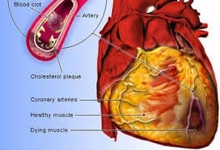

What Is the Prevalence of Heart Attacks in the U.S.
Every year over 700,000 Americans have a heart attack. That’s about one heart attack every 40 seconds. About 500,000 are first heart attacks and the rest are recurrent heart attacks in people who have already had a heart attack.
What Is a Heart Attack
A heart attack happens when one of the arteries of the heart becomes totally blocked, and as a result the muscle that it supplies dies due to lack of oxygen and nutrients. Unless the blood flow is restored immediately, usually within two hours of the start of the heart attack, the muscle develops into dead tissue and scar over time. This then leads to the development to heart failure due to the reduced pumping ability of the heart.
How Do Blockages Occur in the Heart
Blockages start as layers of cholesterol plaque depositing in thin layers along the coronary arteries that carry oxygen and nutrients to the heart muscle. Over time the plaques build up and grow in the artery further limiting blood flow. When the narrowing becomes greater than 70% the patient usually develops chest pain and seek medical attention. However sometimes the blockages rupture like a pimple and result in the formation of a blood clot that suddenly totally blocks the artery resulting in a massive heart attack. So in short blockages in the coronary arteries are a result of cholesterol, plaque, and clot formation.
What Are the Risk Factors for Developing Blockages
There are many risk factors that contribute to the development of the blockages of the heart otherwise known as atherosclerosis. These include smoking, diabetes, obesity, high blood pressure, high cholesterol, inactivity or lack of exercise, and some genetic conditions.
What Are the Signs and Symptoms of a Heart Attack
The five major signs of a heart attack include chest pain, discomfort in jaw, neck, or back, shortness of breath, arm or shoulder pain, and feeling weak or faint.
How Can You Prevent a Heart Attack

In order to prevent a heart attack you need to treat and deal with the underlying risk factors. These include increase in physical activity and lifestyle changes which include a healthy diet which is low in cholesterol, reducing stress, weight loss, and quitting smoking. In addition if you suffer from diabetes high blood pressure and or high cholesterol you need to talk to
your doctor to make sure that you are on the right medications to control and treat these conditions.
How Do You Treat a Heart Attack

If you develop any of the signs or symptoms of a heart attack you should immediately call 911 and chew an aspirin, unless you are allergic to aspirin. Make sure that you don’t drive yourself to the hospital as your condition might worsen and you might end up in a car accident further injuring yourself and others. Time is muscle, and what that means is that the faster the doctors are able to open up the blocked artery the more muscle is saved and less damage to the heart pump occurs. In general if a heart artery is opened within 90 minutes of the onset of symptoms, the majority if not all of the heart muscle at risk could be saved.

For this to happen you would need to get to the hospital as soon as possible. Once you arrive at the hospital the doctors usually do an EKG to confirm the heart attack and will start you on blood thinners to help dissolve the clot. Most patients will be taken to the Cardiac Catheterization Laboratory where the doctors perform an angiography to visualize the coronary arteries and open up the blockage using balloons and stents. In some cases stent placement may not be feasible or the patient may need open heart surgery to fix the blockage(s).
A coronary blockage before (left) and after treatment with a coronary stent (right).


What to Do and Not to Do After a Heart Attack
Once the acute event is treated you will most likely be started on multiple medications to help treat and help prevent another heart attack. These medications include blood thinners like aspirin to keep the arteries open, cholesterol reducing medications such as statins and a variety of other medications including beta blockers to reduce the stress on the heart. Your doctor might also change you diabetic and or hypertension medications in order to better control these conditions. Most patients are also asked to participate in a rehabilitation program for a few weeks where they are monitored closely during physical exercise.

Consultation with a nutritionist is also recommended in order to prevent any bad dietary habits. Following hospital discharge you should usually see your cardiologist within a week or two to review your condition and medications. Make sure to bring your medications and a list of any questions you might have with you to your visit. Be prepared to ask questions and take notes as your doctor may set some physical activity, dietary, and other goals for you to follow. Some of these goals may include an LDL cholesterol goal of less than 70, blood pressure goal of less than 130 over 80, and a hemoglobin A1c level of less than 7.
by Kian Vakili
Works Cited
- Analgesic.
- Blockage of the Coronary Arteries.
- Centers for Disease Control and Prevention.
- Electrocardiography.
- Healthy Diet.
- Healthy Heart.
- Vakili, Babak Alex. Interview.